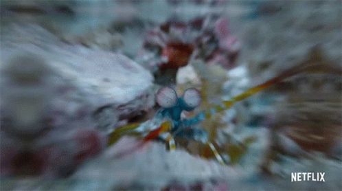
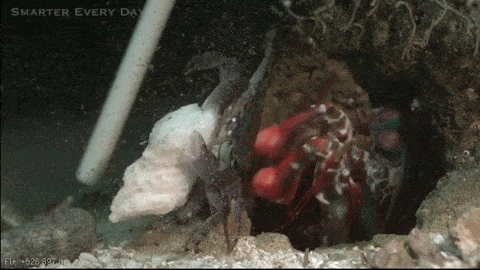
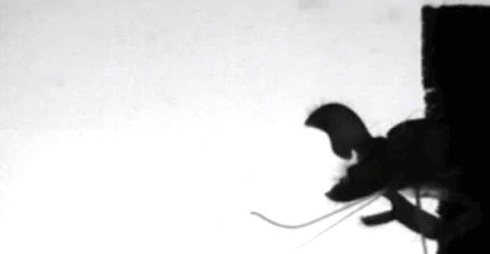
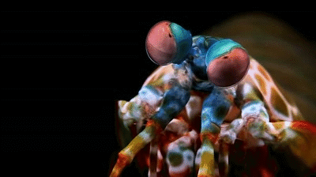

Stomatopoda
Fatos sobre o Stomatopoda
O que é
Stomatopoda (ou estomatópode), chamados popularmente
de tamarutacas ou de lacraias-do-mar no Brasil,
é uma ordem de crustáceos marinhos da subclasse Hoplocarida,
que agrupa cerca de 400 espécies, caracterizadas principalmente
pela morfologia da segunda pata torácica, que é modificada
em apêndice subquelado, lembrando uma pata de louva-a-deus.
As maiores esmagadoras, tais como exemplares de Odontodactylus
scyllarus, são capazes de desferir um dos mais rápidos e violentos
golpes do reino animal, um soco que pode apresentar a velocidade
de um tiro calibre .22 (equivalente a 720 km/h) e uma pressão
de impacto de 600 N/cm².[3] Essa força esmagadora é a
responsável pelo seu título de "lagosta-boxeadora" e é capaz
de facilmente quebrar a carapaça de um caranguejo, as conchas
duras e calcificadas de gastrópodes ou até mesmo quebrar o
vidro reforçado de um aquário.
| Reino | Filo | Subfilo | Classe | Subclasse | Ordem |
|---|---|---|---|---|---|
| Animalia | Arthropoda | Crustacea | Malacostraca | Hoplocarida | Stomatopoda Latreille, 1817 |
Lacraia-do-mar é um perafurador e esmagador
Devido a uma diferença anatômica de seus apêndices, O Camarão Mantis pode ser classificado em dois grupos: os que têm ataque perafurador (spearers) e esmagador (smashers). Com isso, os esmagadores são considerados um dos animais mais fortes e velozes do planeta, por terem um ataque rápido como uma bala e forte como um touro.
O animal mais forte do Mundo
O Camarão Mantis esmagador possui dois apêndices bem desenvolvidos (semelhantes a um martelo), chamados de Porretes de Dáctilo. Com essas “super patas” o animal espanca e esmaga suas presas em uma intensidade de aproximadamente 60 kg/cm² (daí o motivo de um de seus nomes ser lagosta-boxeadora).
O animal mais rápido
Além da enorme potência de seu soco, esse animal consegue movimentar seus apêndices tal qual um tiro de arma de fogo: seu golpe pode chegar a uma velocidade 720 km/h. Curiosamente, tanto a força quanto rapidez do ataque, não danificam sua estrutura corporal.
A tamarutaca possui uma super visão
Uma das espécies de camarão mantis (Gonodactylus smithii) têm os olhos mais complexos do reino animal e é capaz de ver cores invisíveis a vários outros animais, do ultravioleta ao infravermelho. A descoberta foi anunciada por cientistas suíços e australianos.